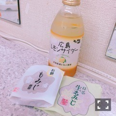

| 2016/10 09 Sun | 斎藤ちはる 言霊(´>∀<｀)ゝ |
ちはるーむへようこそ！
UTB+の感想送ってくれた方、
絶対に買うからね！って方、
皆さん本当ありがとうございます(> <)。。
7月のブログ読んだ時は正直不安だったけど
今回のインタビューの本音を聞いて
もっと応援したくなった。
って方もいて本当に嬉しかった。
確かに私も正直不安だったけど
あのブログのおかげで
こういう素敵な機会も頂けているし
色んな意味で私への見方も変わったかもしれないし
違う一面を見せること
アクションを起こすこと
本当に大切だと改めて感じました。
悔しい気持ちは
常々抱いているよ
あまり顔にも出さないし
あまり言葉にも出したことなかったけど。
でもこれから悔しいと思ったら言っていきます。
思ってる事があったら言っていきます。
言葉に出す事。
言霊ってあると思うから。
だからまず最初に！
GirlsAward2016 AUTUMN/WINTER
TGC KITAKYUSHU2016
私も行きたかった。
あのステージに立ちたかった。
あのランウェイを歩きたかった。
ファッションを好きな気持ちは
負けたくないよ。
いつかあのステージで堂々と魅せれるように
頑張りたいと思います。
-------------------------♡
今更なんだけどね
#chihashot
#chihaOOTD
♬ChihaMusic
！ChihAnswer！
と続いてるのになんで、
ちは"食"散歩
なんだよ！！！！
って疑問に思った方いない？笑
ということで改名です。
◎ChihaFood

広島名物もみじ饅頭ですが、
私が好きなのはこの２つ！！
お餅 と 抹茶。
餡子がどうしても苦手なんだけど
どうしてももみじ饅頭が食べたい！
と思って食べたらとても美味しかったのが
この２つ\( ˆoˆ )/
お餅には中々巡り会えないんだけど
巡り合ったら絶対ゲットしてみてほしい！
しかもお値段もお餅だけ何故かお手頃！
そして抹茶は安定です。
抹茶餡なら何故か食べれる。
不思議ですが。
とても上品な味がします！
もちろんレモンサイダーは
安定の美味しさでした。
最近こういうご当地サイダーみたいな
飲み物を見つけるとついつい気になる...
愛未もお餅もみじ饅頭が好きなんだよ！！
-------------------------♡
♬ ChihaMusic
「希望の轍」サザンオールスターズさん
1990年の曲。
当然私は生まれていませんが
父母の影響で昔から大好きな曲です。
こんな前の曲だったんだ！と
改めて驚きますがずっと変わらず素敵な曲。
イントロのアウトロの
何かが始まるワクワク感、
歌詞の軽やかな切なげな力強さ、
全てが名曲だと思います。
"ため息の中にほのかなあこがれが寄りそう
愛されるために羽ばたくようなBaby love"
という歌詞が好きです。
花粉なのかな？
くしゃみと鼻水が止まらない...
病院行かなきゃ(> <)
おやすみ〜
斎藤ちはる